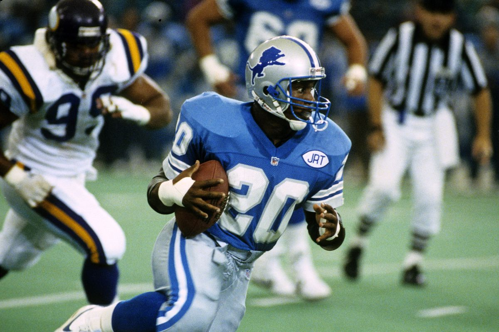
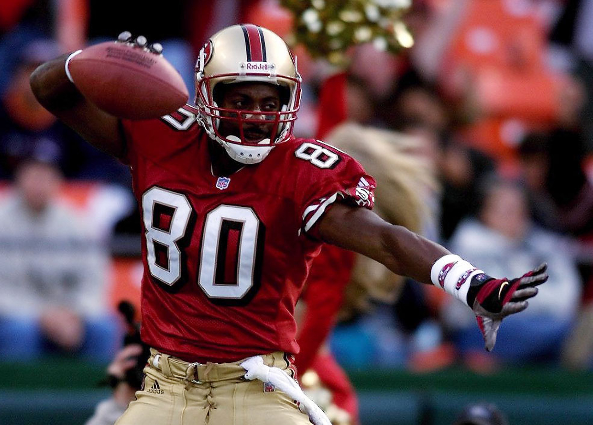
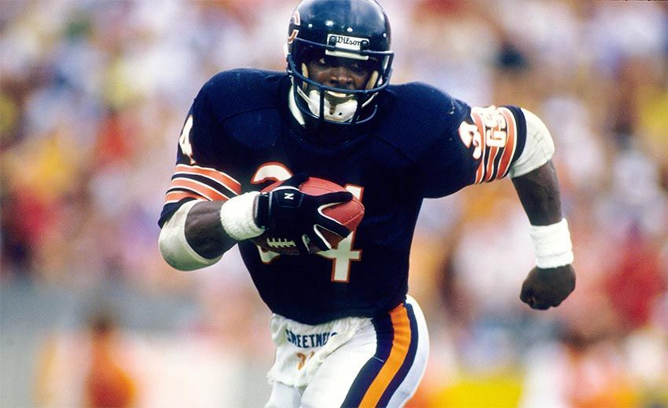

Los mejores jugadores de todos los tiempos en la NFL
No disputo un SuperBowl
Gano 3 SuperBowl con los 49ers de San Franscisco
Gano 1 SuperBowl con los osos de Chicago
Gano 4 SuperBowl con los 49ers de San Franscisco
Gano 1 SuperBowl con los Broncos
Barry Sanders
Jerry Rice
Walter Payton
Joe Montana
Peyton Manning
Barry Sanders
Pese a militar en un equipo más bien mediocre, Sanders logró desafiar a la lógica con un juego absolutamente excepcional. Su carrera fue muy corta y nunca aspiró a romper ningún récord, aunque si hubiera seguido jugando podría haber pulverizado más de una marca. Pero esto no era importante para él. Una de las cosas por las que se le recuerda es su humildad, ya que pocas veces al terminar un partido se le veía celebrar la victoria. Prefería regalar el balón o felicitar a sus compañeros.

Jerry Rice
Ganador de 3 Cuper Bowls con los 49ers, Rice tiene varios récords en su haber, incluyendo el de mayor cantidad de yardas recorridas, más de 23500, unos números que muchos se aventuran a asegurar que no conseguirá igualar nadie jamás.

Walter Payton
Ningún jugador ha logrado mostrar la gracia de Payton, apodado “Sweetness” o “dulzura”. Hasta el año 2000 nadie rompió sus registros de yardas recorridas y touchdowns. Fuera del campo también ha tenido grandes actuaciones, especialmente para sensibilizar a la gente sobre la donación de órganos.

Joe Montana
A pesar de que el próximo jugador de la lista, Peyton Manning, es para muchos el mejor quarteback de todos los tiempos, Montana era mucho mejor jugador. Condujo a los 49ers a ganar 4 Super Bowls en los 80, convirtiéndolos en uno de los equipos con más historia de la NFL. Ganó el MVP de la Super Bowl en tres de las cuatro ocasiones en las que su equipo se hizo con la victoria mientras él jugaba.
Peyton Manning
Manning está en camino de pulverizar todos los logros de Brett Favre. Es el quarterback más sólido y muchos aseguran que no tiene rival a lo largo de la historia. Actualmente tiene más de 40 registros a su nombre y ha conseguido 4 MVP de la NFL.